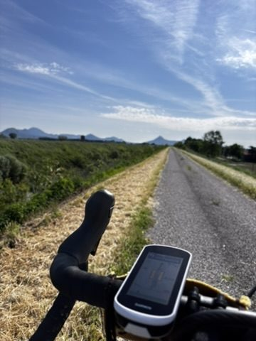
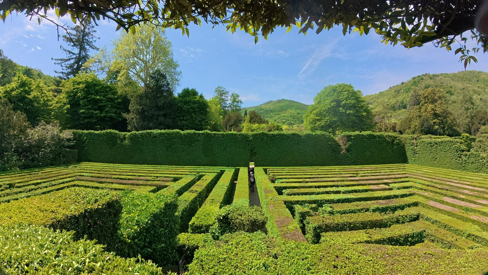
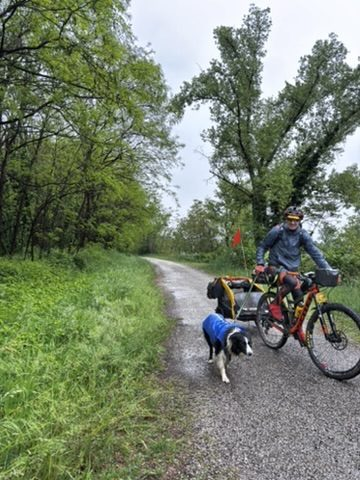
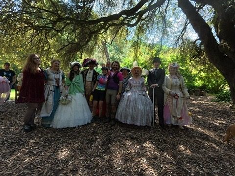
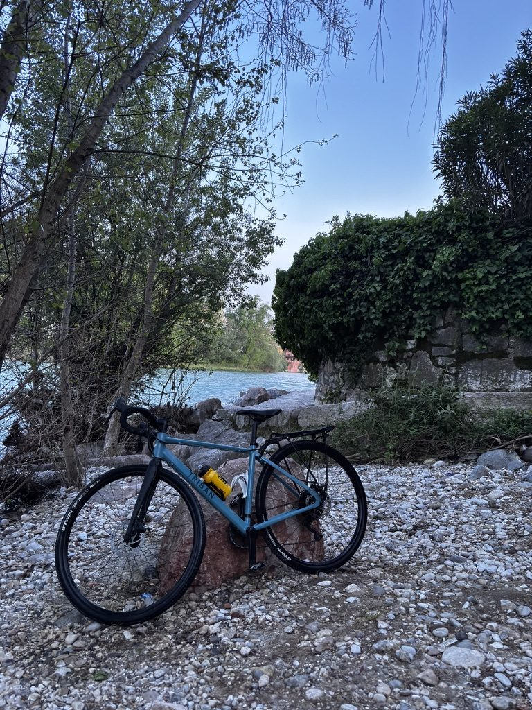

There is something about gravel paths in northern Italy that makes you feel like you could keep going forever. Not because they're easy — they're not. But because one path leads to another, and another to another, and at some point you stop thinking about where you're going and start thinking about nothing at all.

Endless gravel paths near Venice. You could follow them all day. I nearly did.
The Veneto is deceptive. On a map it looks flat and manageable. On a bike, in gravel, with the sun already high and the kilometres accumulating, it becomes something else entirely. Something you have to negotiate with rather than simply ride through.
The detour
At some point, I took a wrong turn. This happens. The map said one thing, the path said another, and I followed the path because it looked more interesting. Which it was.

Lost in the maze. The detour added kilometres. It also added this, which the original route did not have.
I've stopped being upset about getting lost on a bike. It costs you time, sometimes it costs you energy you didn't have to spare — but it almost always gives you something the planned route wouldn't have. A view. A village. A person. Today it gave me all three.
The man with the dog
On the gravel, among all the cyclists doing the Veneto Gravel event in the way cyclists typically do it — heads down, legs turning, focused — there was a man who had brought his dog.

The dog did the full route. The man was cool about it. The dog was cooler.
I don't know what the dog thought of the situation. He seemed fine. Better than fine, actually — he looked like he was having an excellent time, which is the correct attitude for a gravel race in Italy. I passed them. They passed me back later. We exchanged a look.

Not everything on a gravel ride is serious. Some of it is just very good.
Free like a bird
There are moments on a bike where everything lines up. The road is smooth enough, the pace is right, the light is at the correct angle, and for a few minutes you feel like you are not working at all — just moving through the world with very little friction.

Free like a bird. Italy makes this easy. The gravel makes you earn it first.
I had one of those moments in the Veneto. I don't know exactly when — somewhere after the detour and before the legs started complaining about the distance. The road was quiet, the fields were green, and I felt, in that way you can only feel on a bicycle, completely free.
The river at the end
After a long day on gravel, the bike needs cleaning. So do you. If there is a river nearby, both problems solve themselves at once.

Bike goes in the river. Gravel, dust, everything — gone. This is the best bike wash there is.
I stood in a river in northern Italy with my bike, washing off the day. The gravel, the dust, the detour kilometres, the dog, the moments of freedom — all of it still there somewhere in the memory, the rest washing away downstream.
I'd do it again tomorrow. I nearly did.